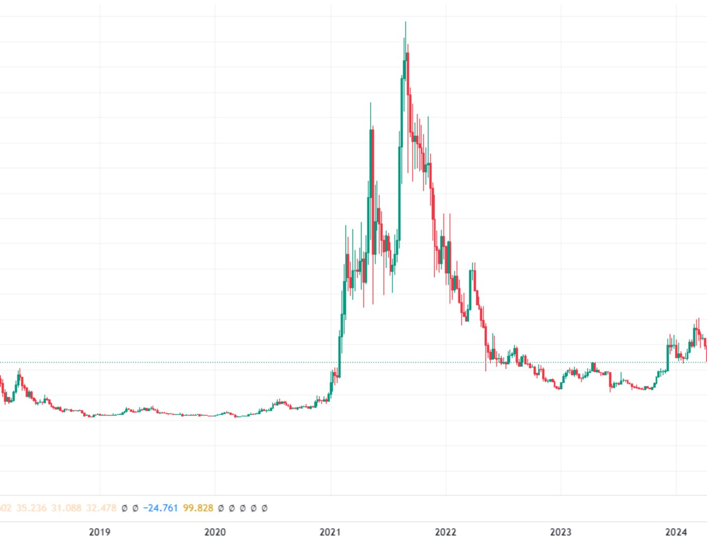
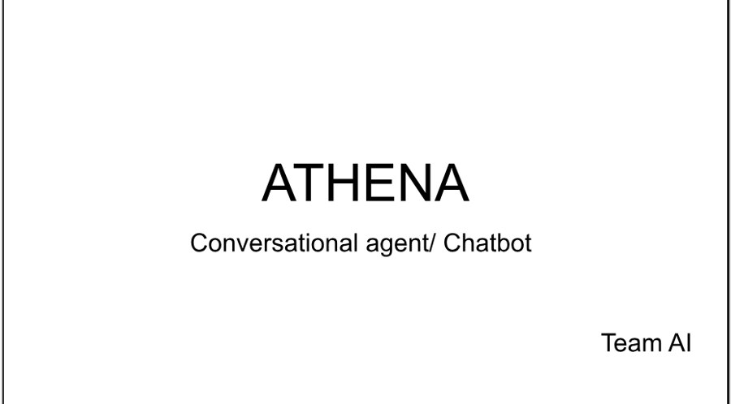

AGI cognitive architectures
Research on AGI cognitive architectures at SingularityNET, and integrating NLP models into AI pipelines. This follows my earlier work with OpenCog, AtomSpace and MOSES at iCog Labs.
Hyperon · OpenCog · AtomSpace · MOSESResearch on AGI cognitive architectures at SingularityNET, and integrating NLP models into AI pipelines. This follows my earlier work with OpenCog, AtomSpace and MOSES at iCog Labs.
Hyperon · OpenCog · AtomSpace · MOSESLanguage models, automated provers and Lean 4 working together on a 999-theorem library, with 877 theorems proved and every proof checked by Lean's kernel.
See the resultsPipelines that transform mathematical literature into formal proofs, so that published mathematics can be checked by machine.
LLMs · Lean 4Engaged in Hanson Robotics projects, utilizing various Machine Learning and Deep Learning algorithms to advance humanoid robots. Performed image and video classification tasks with TensorFlow and Caffe, leveraging GPU acceleration. Implemented algorithms within the OpenCog framework, contributing to integrative multi-algorithm AI systems. Integrated sophisticated software into humanoid robots for seamless operation. Developed sound detection capabilities for humanoid robot named SOPHIA.
TensorFlow · Caffe · OpenCog · GPU acceleration
Utilized AWS SageMaker to analyze Cardano's blockchain, focusing on stake pool behavior and creating predictive models for Return on Stake. The results were visualized using AWS QuickSight. Built and maintained a comprehensive monitoring infrastructure using Prometheus and Grafana, ensuring optimal database and metric performance.
SageMaker · QuickSight · Prometheus · Grafana
Developed Athena and ROSIE, voice-activated chatbots and Qbo toy robots. Athena/Rosie are capable of providing recommendations and directions to tourists and hotel guests, whereas the Qbo toy robot is able to teach students basic mathematics, play puzzles and carry out day to day conversations.
Watch the Rosie chatbot demoDeveloped a sophisticated ChatGPT-based system on Azure specifically designed to provide comprehensive and accurate answers to medical inquiries. The system was carefully engineered to adhere to strict privacy and confidentiality standards, ensuring the protection of sensitive patient data.
Azure · ChatGPTLed the end-to-end development of a credit scoring system at EthSwitch that integrates transactional, social media and psychometric data, improving prediction accuracy and expanding financial inclusion for underrepresented communities.
Interoperable score · Psychometric score · Facebook social score · TikTok social scoreThe Parent-Child Framework, a biologically inspired model for bias-free machine learning. Its NeuroChild and GuardianNet architectures proactively detect and mitigate algorithmic bias.
Read the paper